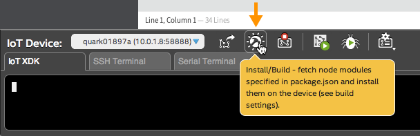
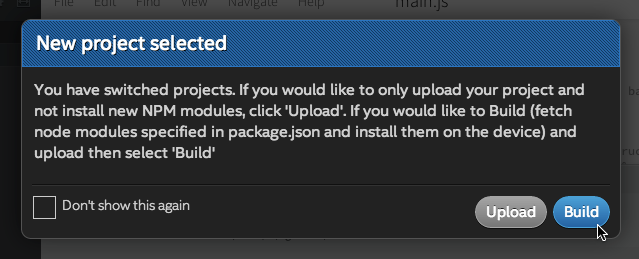
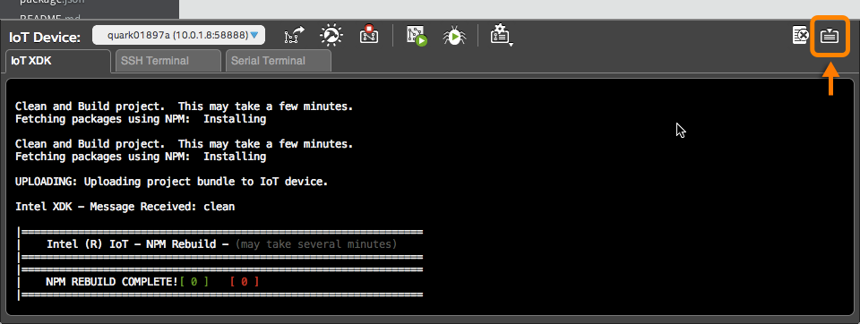

-
In the bottom toolbar, click the “Install/Build” icon.

-
In the popup, click “Build”.

Wait a moment for the packages to download and install. You will see a confirmation message in the console log.
Click the “Toggle console window” icon if you see any messages and the console is not already expanded.
